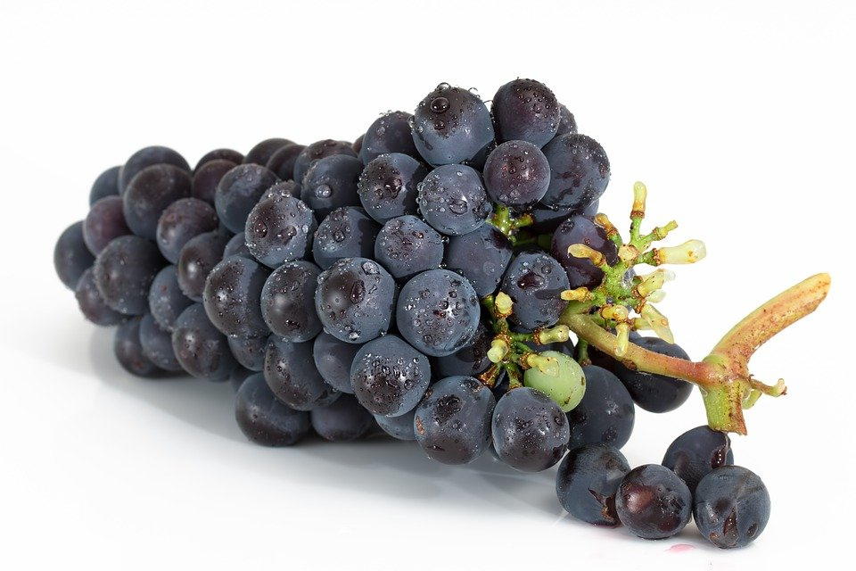
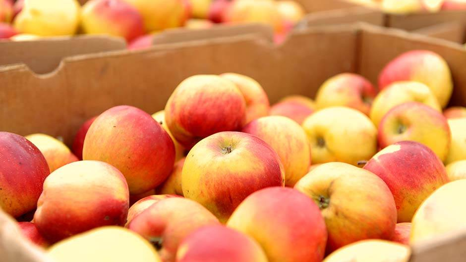
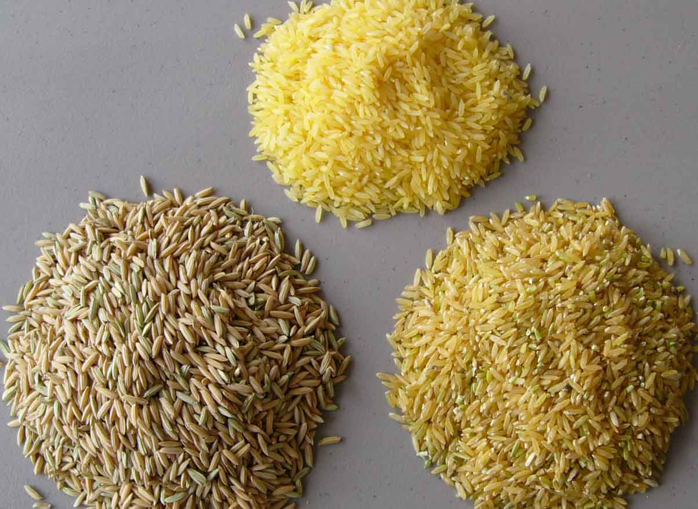
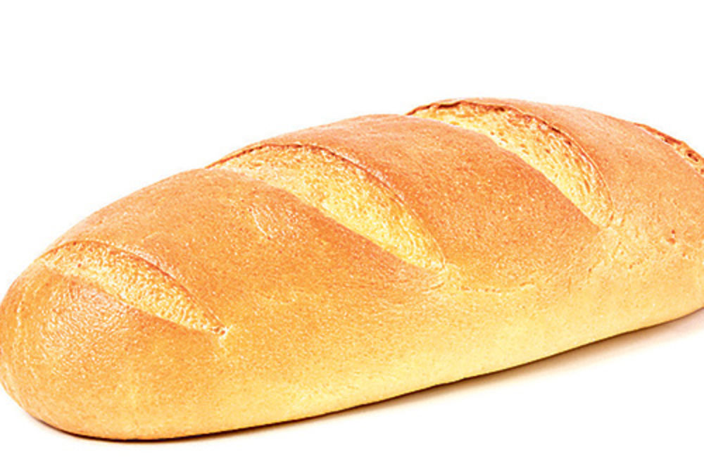

Ugljeni hidrati
Ugljeni hidrati se drugačije zovu glicidi zbog svog blagog ukusa (grčki koren "gluco" znači blagost). Oni su osnovni izvor energije za sve funkcije tela i brzo stvaraju kalorije.
Sa hemijske tačke gledišta, njihovi molekuli sastavljeni su od ugljenika, vodonika i kiseonika. Ugljeni hidrati se dele u tri grupe, u zavisnosti od veličine svojih molekula: monosaharidi, disaharidi i polisaharidi. Prve dve grupe nazivamo šećeri.
Hemijski sastav
Monosaharidi
Oni se sastoje od jednog molekula. Organizam ih ne može neposredno i brzo apsorbovati. Najčešći monosaharidi u prirodi su glukoza (dekstroza) i fruktoza (levuloza). Oba su sastavljena od istovetnih atoma, a razlikuju se po rasporedu atoma u molekulu. Glukozu i fruktozu možemo pronaći u svom voću kao i u medu.
Disaharidi
To su ugljeni hidrati koji se sastoje iz dva molekula monosaharida. Da bi ih organizam upotrebio, moraju se razložiti na dva osnovna molekula. Tu funkciju obavljaju enzimi za vreme varenja. Najčešći disaharidi su:
Saharoza
Ili šećer dobijen iz (ili preradom) šećerne trske ili šećerne repe. Saharozu možemo naći u repi, banani, ananasu i drugom voću. Ona nastaje spojem molekula glukoze i fruktoze, koji prilikom sjedinjenja gube molekul vode.
Maltoza
Nalazi se posebno u ječmenom sladu i drugim žitaricama. Sastoji se iz dva molekula glukoze.
Laktoza
Nalazi se u mleku sisara, u odnosu od 40g/l u kravljem mleku, a 55g/l u majčinom mleku. Njen molekul je rezultat kombinacije dva monosaharida: glukoze i fruktoze.
Polisaharidi
To su složeni ugljeni hidrati, čiji je molekul spoj mnogih monosaharida, uglavnom glukoze. Oni se mogu pronaći u zrnu žitarica (pšenica, pirinač, ječam, kukuruz) i u krtolama (krompir, repa). Postoje četiri vrste polisaharida ili ugljenih hidrata:
Skrob
Njegov molekul je sastavljen iz dugog lanca molekula glukoze, spojenih na poseban način. Možemo ga naći u semenu, korenu, krtolama, lišću i voću. On je osnovni sastojak brašna. Skrob proizvode samo biljke.
Dekstrini
Delovi molekula skroba, koji je plod delovanja amilaza. Enzimi najpre razbijaju skrob na male delove, zatim potpuno odvajaju sve molekule glukoze od kojih je sastavljen. Zbog toga možemo reći da su dekstrini prethodno svareni skrob.
Celuloza
Najčešća organska materija u prirodi. Ovaj polisaharid je prisutan u svim biljkama, jer on obrazuje strukturu (vlakna) semena, korena, lišća, voća... U semenu ili zrnu žitarice celuloza se nalazi na opni koja ga obavlja: to su mekinje. Celuloza se naziva i biljnim vlaknom.
Glikogen
Hemijski podseća na skrob, ali ga stvaraju životinje, od glukoze oslobođene u toku varenja i apsorbovane putem krvi.
Glukoza
Glukoza, čija je hemijska formula C6H12O6, osnovno je gorivo u našem organizmu. Sa energetske tačke gledišta, ljudsko biće je motor koji radi na glukozu. Ugljeni hidrati iz hrane pretvaraju se u glukozu u probavnom traktu. Glukoza prelazi u krv i tako dospeva do svih ćelija u organizmu. Njen osnovni rezervoar je jetra, koja deluje kao regulator. Glukoza se skladišti u jetri u vidu glikogena, rezervnog polisaharida, koji se ponovo pretvara u glukozu, kada to organizmu zatreba. Na taj način jetra održava stalni nivo glukoze u krvi: 1g/l krvi. Mala količina glikogena uskladištena je u ćelijama naših mišića. Ona se pretvara u glukozu pri fizičkim aktivnostima. Kada se nivo glukoze u krvi smanji, a rezerve iz jetre i mišića (koje traju samo nekoliko sati) ne uspevaju da ga povećaju jer su iscrpljene, dolazi do hipoglikemije. Ako se to naglo desi, pri čemu organizam nije imao vremena da potraži druge rezerve energije, javlja se niz izrazitih simptoma: osećaj malaksalosti, nesnosna glad, gubitak snage, čak gubitak svesti. Ovaj fenomen poznatiji pod nazivom lipothymia - kratkotrajni gubitak svesti, tj. nesvestica. Putem krvotoka glukoza se prenosi do svih ćelija u organizmu. Zahvaljujući energiji koju proizvodi sagorevanjem, kada se sjedini sa kiseonikom iz ćelija, glukoza pokreće celi organizam: dolazi do grčenja mišića, proizvodnje telesne toplote, razvijanje moždanih funkcija. Mozak ima stalnu potrebu za glukozom i kiseonikom. Svakog dana naš mozak potroši oko 140 grama glukoze. Da bi glukoza prodrla u unutrašnjost ćelija i tamo bila sagorena, proizvodeći na taj način energiju, potrebno je dejstvo jednog hormona: insulina. Kada nema dovoljno insulina u krvi, jer ga pankreas više ne proizvodi, glukoza se sakuplja u krvi umesto da ode u ćelije. Kada se nađe u ćelijama, glukozi su potrebni vitamini grupe B da bi bila metabolisana. Zbog toga, kada upotrebljavamo beli šećer (praktično čisto saharozu), organizam koristi sopstvene rezerve vitamina B, uz rizik da ih sve potroši. Rafinisani šećer je siromašna namirnica: donosi samo kalorije, bez ikakvih supstanci neophodnih našem organizmu.
Biljna vlakna (celuloza)
Biljna vlakna su vrsta ugljenih hidrata koja se ne apsorbuju (ne prelaze u krv). Organizam ne može da ih koristi kao izvor energije. Sva uneta celuloza izbacuje se sa stolicom. Zbog toga joj doskora nije pridavan veći filozofski značaj. Najnovija saznanja nam govore o velikoj važnosti naoko nekorisnih vlakana: ona služe kao čistači u crevima, upijajući sve otrove i odstranjujući štetne supstance kao što su žučne kiseline, koje prethode holesterolu.
Biljna vlakna se ispunjavaju vodom i na taj način raste obim. Ona olakšavaju izbacivanje stolice. Ako ishrana sadrži malo biljnih vlakana, zato što se ne unosi dovoljna količina integralnih žitarica i povrća, stolica je tvrda, suva, tako da je creva teško izbacuju. Takvo stanje može dovesti do hemoroida i raka debelog creva. Celuloza (biljna vlakna) isključivo je biljnog porekla. Nijedna namirnica životinjskog porekla (meso, riba, mleko, jaja) ne sadrži celulozu. Iako nam ne obezbeđuje energiju i ne prolazi kroz krvotok, ona je neophodan za zdravi, uravnoteženi režim ishrane, pošto nas štiti od konstipacije (zatvora) i snižava holesterol.
Zdrava ishrana i ugljeni hidrati
Na osnovu preporuka SZO, zdrava ishrana treba da teži povećanju potrošnje složenih ugljenih hidrata (do 70% unete energije) i smanjenju potošnje prostih, rafinisanih ugljenih hidrata (beli šećer). Trebalo bi, dakle, obilno koristiti:
Žitarice (pšenica, ječam, ovas, raž, kukuruz, pirinač, proso) osnovni su izvor složenih ugljenih hidrata (skrob). Na osnovu mišljenja Svetske zdravstvene organizacije, upotreba žitarica (psoebno ovsa) ima blagotvorno dejstvo kad su u pitanju dijabetes i ostali metabolički poremećaji. Žitarice smanjuju rizik od dobijanja raka.
Žitarice treba da postanu osnova ljudske ishrane. Najveći procenat energije trebalo bi da potiče od njih. Ali, na žalost, na zapadu se ishrana sastoji od mesa, mlečnih proizvoda, konzervirane hrane i rafinisane industrijske hrane, u kojoj složeni ugljeni hidrati nisu zastupljeni ni sa 50%. Nutricionisti savetuju obilnu upotrebu žitarica kako doručak (hleb, pahuljice, itd.), tako i za ručak.
Integralne žitarice
Integralne žitarice poseduju i klicu (bogatu vitaminima B i E i esencijalnim aminokiselinama) i opnu zrna ili mekinje (bogate biljnim vlaknima).
Krtolasto povrće (krompir, slatki krompir) i mahunasto povrće (pasulj, sočivo, grašak i soja) bogati su složenim ugljenim hidratima (skrob) i takođe predstavljaju značajan izvor proteina visoke biološke vrednosti.
Tradicionalna zapadna ishrana, zasnovana na mesu, mleku i mlečnim proizvodima, oskudeva u biljnim vlaknima (između 3 i 10 grama dnevno). Međutim, režim ishrane čiju osnovu čine žitarice, povrće, mahunarke i voće, obezbeđuje neophodne dnevne količine biljnih vlakana.
Upotrebu šećera, torti, bombona, slatkih pića trebalo bi što više smanjiti. Upotreba belog šećera obezbeđuje nam energiju, ali nema nikakvu hranljivu vrednost. Donosi nam kalorije, ali ne i vitamine i minerale. Prema tome, beli šećer nas osiromašuje za te supstance. Međutim, smeđi šećer i med, a posebno voćni šećer sadrže vitamine i minerale koji omogućuju da da ih organizam potpuno iskoristi.
Varenje i korišćenje ugljenih hidrata
Složeni ugljeni hidrati se u crevima pretvaraju u glukozu. Za razliku od prostih šećera, složeni ugljeni hidrati se sporo pretvaraju u glukozu (za sve vreme varenja) i postepeno prelaze u krv. Prosti šećeri brzo prelaze u krv, što dovodi do naglog povećanje glukoze. Na to povećanje reaguje pankreas koji brzo luči insulin da neutralizuje glukozu. To dovodi do pada glukoze u krvi (hipoglikemija).
Te nagle oscilacije stope glukoze, izazvane slatkišima, primoravaju pankreas i celi organizam da učini veliki metabolički napor, što otvara put za bolesti dijabetesa ili ateroskleroze. Složeni ugljeni hidrati (skrob iz žitarica, krtolastog povrća, mahunarki) sporo prelaze u krv za vreme varenja. Oni održavaju stalni nivo glukoze više sati i omogućavaju bolje funkcionisanje pankreasa. Zbog toga smo često gladni iako smo pre toga pojeli neki slatkiš ili parče dvopeka sa džemom. Doručak sastavljen od integralnih žitarica obezbeđuje nam energiju za dobar deo dana.
